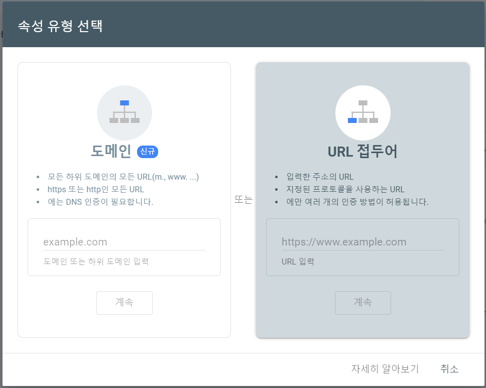
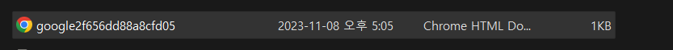
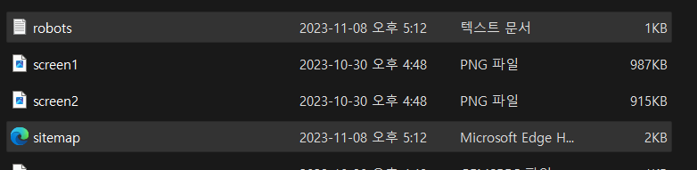
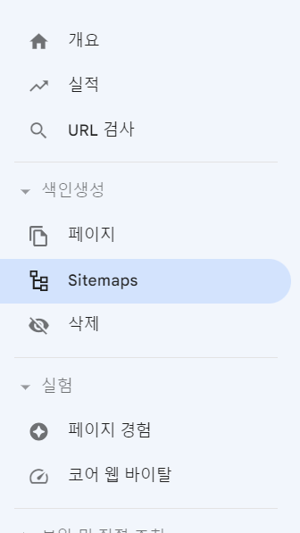
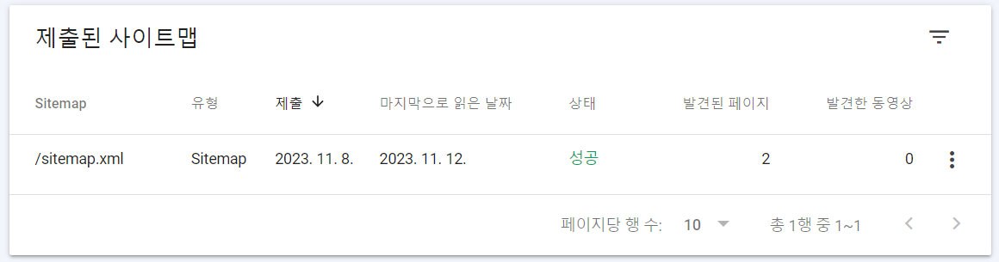

Google Search Console에 내 블로그를 등록한 후 사이트맵을 제출하여 구글 크롤링 대상에 들어가 검색결과에 내 블로그를 노출하는 방법을 포스팅 했다.
1. Google Search Console에 들어가서 속성 추가하기
-
google에 google search console을 검색 후 들어가서 속성 추가를 클릭 한 후, 적용하고자 하는 블로그의 주소를 URL 접두어에 입력하고 계속을 클릭한다. 
-
소유권 확인 파일(.html)을 다운 받아 로컬에 있는 내 블로그 레포지토리에 붙여넣고 add, commit 후 push 한다. 
-
소유권이 확인되면 완료된 것이다.
2. Google Sitemap 제출하기
-
google search console에서 속성을 등록하고 사이트맵까지 제출하면 google에서 등록한 사이트의 동영상, 이미지 파일 또는 뉴스 기사를 찾고 이해하는 데 도움을 준다고 한다.
-
sitemap.xml파일과 robots.txt파일을 만들어서 로컬에 있는 내 블로그 레포지토리에 붙여넣고 add, commit 후 push 한다. 
-
google search console에 들어가 좌측 메뉴에서 Sitemaps를 클릭한다. 
-
새 사이트맵 추가에 sitemap.xml을 입력하고 제출한다.
-
제출에 성공한 사이트맵을 확인할 수 있다. 